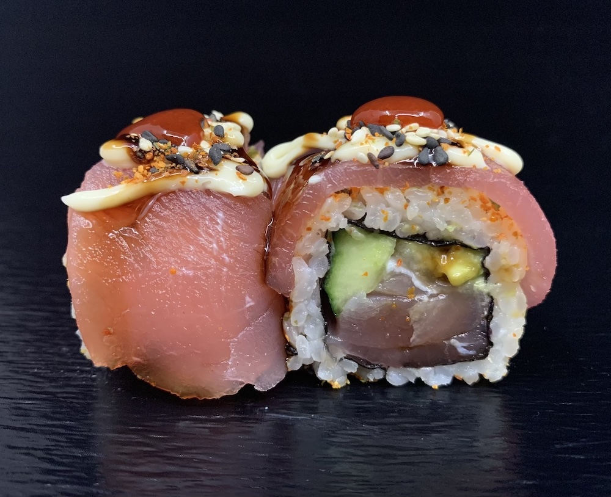
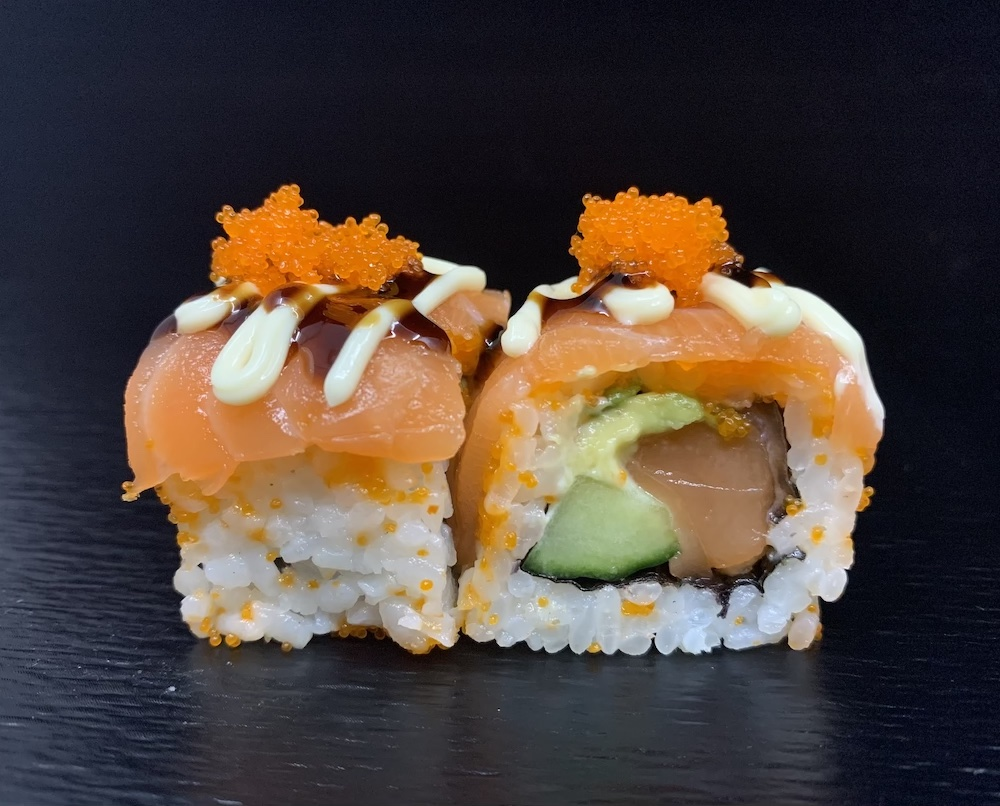
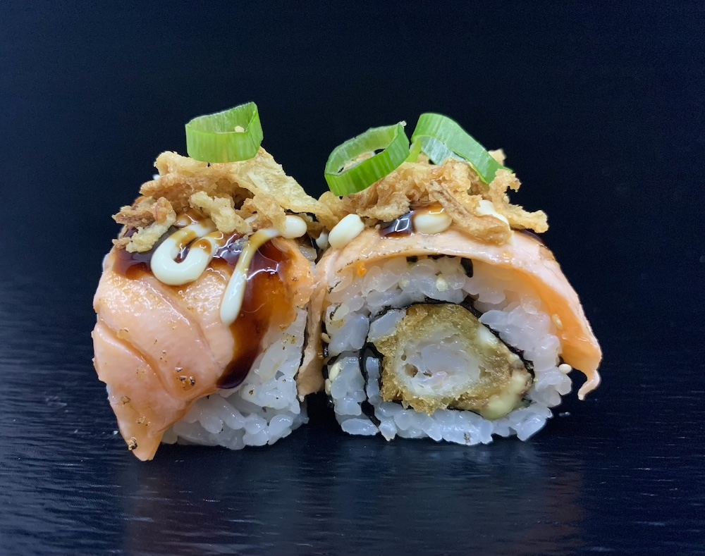
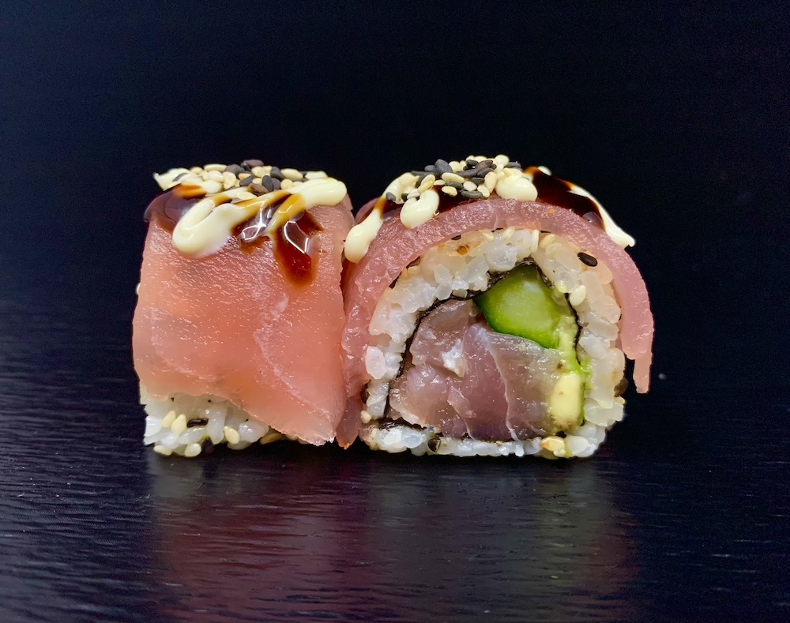
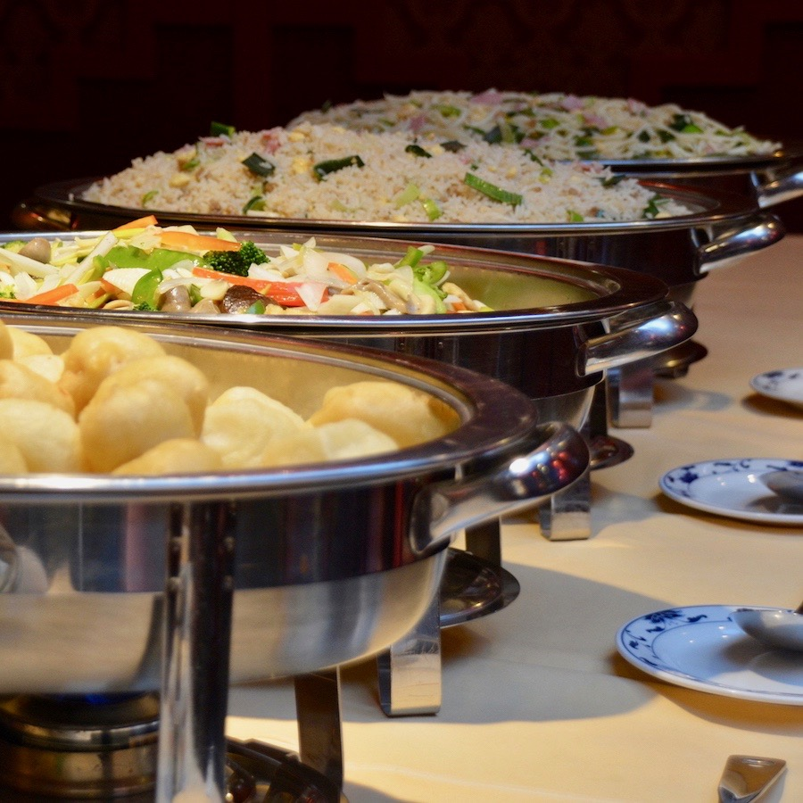
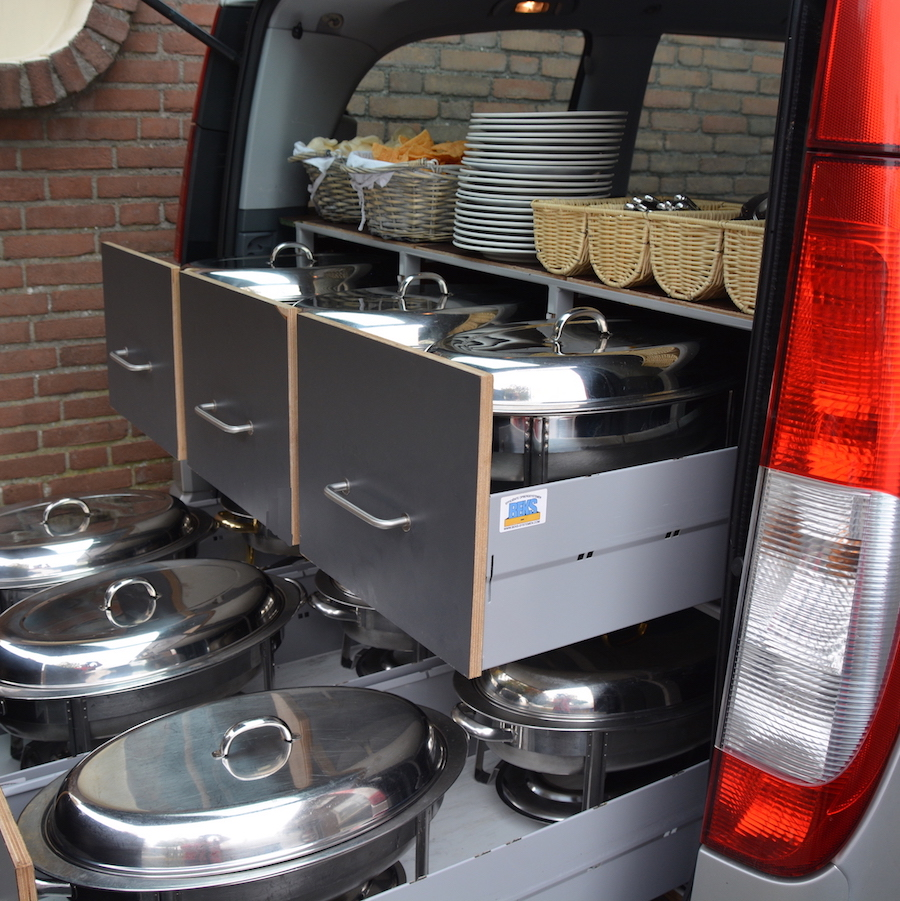
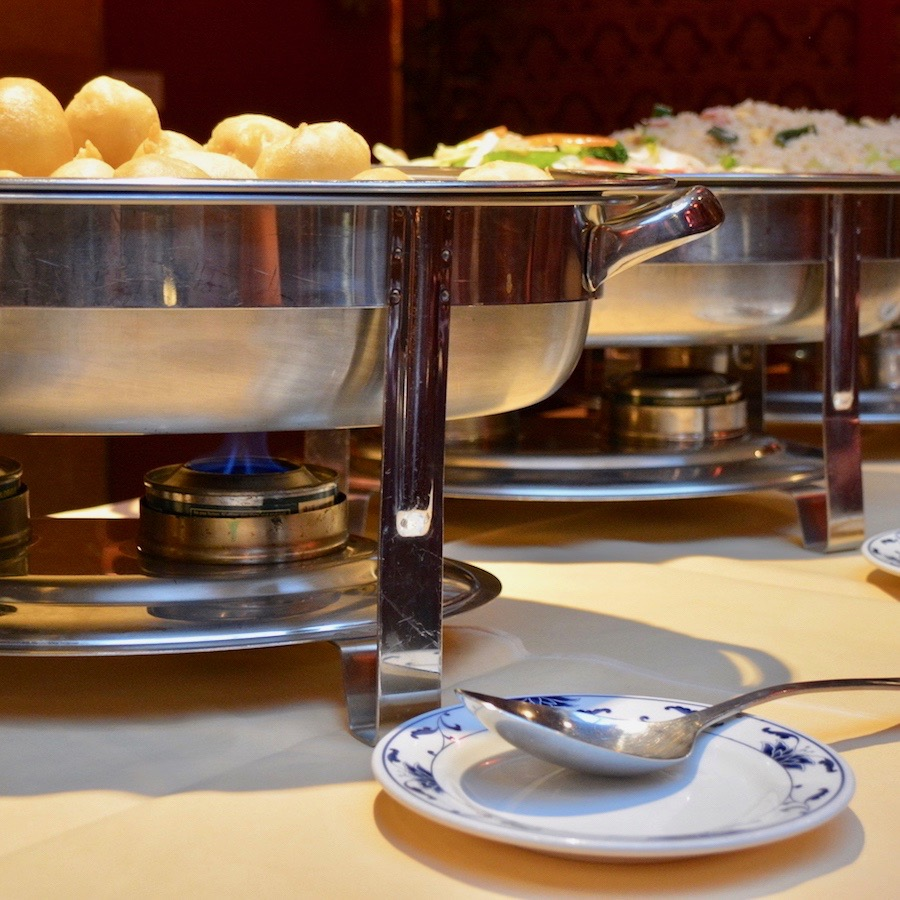
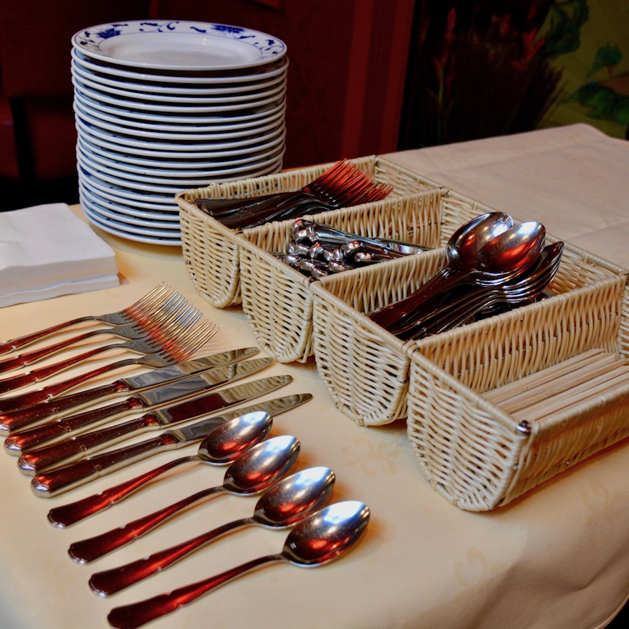

Vier de kerstdagen samen met familie en vrienden. Op 25 en 26 december serveren wij uitsluitend het feestelijke kerstbuffet; à la carte dineren is die dagen niet mogelijk.
Sushi afhalen op 25 en 26 december: bestellen kan tot 15:00 vanwege de drukte, ophalen wanneer u wilt.
Het Verre Oosten, in het nabije Hapert
Bamboo Inn is een Chinees specialiteitenrestaurant met authentieke gerechten uit onder andere Sichuan, Peking en Kanton. Onze koks laten u ook kennismaken met de keukens van Korea en Mongolië: nu eens als traditioneel streekgerecht, dan weer met de nieuwste ontwikkelingen in de oriëntaalse keuken.
Van een avondje uit tot een jubileum of bedrijfsfeest van 200 personen: bij Bamboo Inn bent u van harte welkom.
Onze kaart van 2026. Hoofdgerechten worden geserveerd met witte rijst; bij nasi of bami € 2,50 toeslag, bij mihoen € 4,00. Menuboek als pdf
Lunch Express
Te bestellen van 12:00 tot 15:00 in ons restaurant
€ 19,00 p.p.
Voorgerecht naar keuze
Tomatensoep, kippensoep, mini loempia's of pangsit goreng
Hoofdgerecht naar keuze
Babi pangang, foe yong hai, tjap tjoy, garnalen in knoflooksaus, tsa tiu (geroosterd vlees), gerookte kip met ketjapsaus, kip met cashewnoten, gebakken visfilet in vruchtensaus of 4 stokjes kipsaté. Met nasi, bami, witte rijst of friet.
Afsluiting
Koffie of thee
Asian Deli Menu
vanaf 2 personen42,50
Dim Sum, assortiment van diverse kleine hapjes
Sorbet verfrissing
Sizzling Chicken, blokjes kip met diverse groenten op een gietijzeren schaal
Chili Prawns, gebakken garnalen in zoet-pikante saus
Red Salmon, gebakken zalmfilet op een bedje van taugé met ketjapsaus
Cantonese Fried Rice, gebakken rijst op Kantonese wijze
Tropical Dreams, roomijs met verse vruchten, crème brûlée en slagroom
Koffie of thee met versnapering
Bamboo Inn Menu
vanaf 2 personen43,50
Bamboo Inn Soup, gebonden soep met groenten, garnalen, kippen- en varkensvlees
Malay Satay
Spicy Garlic Prawns, garnalen in pikante knoflooksaus
Red Salmon
Birdnest Chicken, vogelnestjes gevuld met blokjes kip en cashewnoten
Sizzling Tenderloin
Cantonese Fried Rice
Ice Tropical
Koffie of thee
Vanaf 6 personen een extra hoofdschotel van de chef, vanaf 8 personen 2 extra hoofdschotels van de chef.
Ocean Delight Menu
per persoon55,50
Surumono, bouillon met krab en zeegroenten
Sea Scallop with Mushrooms, St. Jacobsvruchten met Chinese champignons
Grill King Prawn, gegrilde grote gamba's met knoflooksaus
Sizzling Prawns, garnalen op gietijzeren schaal
Fried Tilapia Filet in Garlic Sauce
Red Salmon
Fried Thai Rice
Ice Tropical, roomijs met verse vruchten en slagroom
Koffie of thee
Drie gangen vismenu
per persoon32,50
Surumono, bouillon met krab en zeegroenten
King Prawn, grote gamba's met chilisaus
Fried Tilapia in Garlic Sauce, gebakken tilapia in knoflooksaus, met Fried Thai Rice
Drie gangen vleesmenu
per persoon32,50
Tomatoes Soup, tomatensoep
Malay Satay, saté op Maleisische wijze
Sizzling Tenderloin, ossenhaas op gietijzeren schaal, met Fried Thai Rice
Kroepoek Udang, Soon Chee Ha (Chinese garnalen in knoflooksaus), Chinese Koe Lo Yuk (blokjes varkenshaas in zoetzure saus), Foe Yong Hai (gebakken roerei met groenten), Babi Pangang (geroosterd varkensvlees), Chun Kin (mini loempia), stokje saté, witte rijst
Soepen
Chicken soup
Kippensoep
5,60
Tomato soup
Tomatensoep
5,60
Soto Ajampittig
Indische pikante kippensoep
6,30
Wanton soup
Kantonese soep met vleespasteitjes
6,80
Vegetable soup
Groentensoep
5,60
Bamboo Inn soup
Gebonden soep van diverse groenten met garnaal, kip en varkensvlees
6,80
Voorgerechten
Mini Spring Roll
Mini loempia's met pikante saus, 5 stuks
5,90
Pangsit Goreng
Gefrituurd deeg met vlees, zoetzure saus, 4 stuks
5,50
Malay Satay
Maleisische saté met kroepoek, 5 stuks
8,80
Chicken Satay
Kipsaté, 2 stuks
4,80
Frog Legspittig
Gebakken kikkerbilletjes in pikante knoflooksaus
11,40
Garlic Spare Ribpittig
Varkensribbetjes in pikante knoflooksaus
11,90
Sea Scallop with mushrooms
St. Jacobsvruchten met Chinese paddenstoelen
11,90
Tilapia filet
Gepocheerde tilapiafilet in sojasaus
11,00
Salmon fish
Gebakken zalmfilet op een bedje van taugé in ketjapsaus
11,00
Chilli Prawnspittig
Garnalen in pikante chilisaus
12,80
Ketjap Prawns
Garnalen in ketjap-knoflooksaus
12,80
Sweet & Spicy Prawnspittig
Gebakken garnalen in een krokant pikant jasje
12,80
Thai Chilli Prawnspittig
Garnalen in pikante Thaise chilisaus
12,80
Pisang Goreng
Gebakken bananen
5,50




Sushi
Sashimi, 6 stuks
Sashimi Salmon
10,50
Uramaki, 8 stuks
Sake Roll
Komkommer, avocado, zalm
11,50
Tempura Ebi Roll
Avocado, gefrituurde garnalen
11,50
Chicken Roll
Komkommer, gefrituurde kip
11,50
Spicy Chicken Rollpittig
Avocado, gefrituurde kip
11,50
California Roll
Komkommer, avocado, krab
11,50
Vegetarian Roll
Komkommer, avocado, omelet, tofu, zeewier
11,50
Special rolls, 8 stuks
Soft Shell Salmon Roll
Komkommer, avocado, zalm
18,00
Flamed Salmon Ebi Roll
Avocado, gefrituurde garnalen, geflambeerde zalm
18,00
Crispy rolls, gefrituurde sushi, 5 stuks
Crispy Krab
Komkommer, krab
9,50
Crispy Salmonpittig
Komkommer, zalm
9,50
Crispy Ebi
Komkommer, gefrituurde garnalen
10,50
Crispy Chicken
Komkommer, yakitori kip
9,50
Sushi om af te halen heeft een eigen kaart: zie afhalen.
Gepaneerde blokjes kip met verse ananas in vruchtensaus
Curry Chickenpittig
Gesneden kip met groenten in kerriesaus
Kongpo Chickenpittig
Blokjes kip met pinda's in pikante kruidensaus
Mushroom Chicken
Gesneden kip met champignons
Hot Garlic Chickenpittig
Blokjes kip met ui en prei in pikante knoflooksaus
Apple Honey Chicken
Reepjes kip in appel-honingsaus
Sichuan Hot Chickenpittig
Gesneden kipfilet met pikante Spaanse peper
Varkensvlees
19,90 · halve portie 13,90
Babi Pangang
Geroosterd mager varkensvlees
Chinese Sweet & Sour Pork
Gepaneerde blokjes varkenshaas met zoetzure saus
Spicy Soja Porkpittig
Blokjes varkensfilet met ui en prei in pikante ketjapsaus
Roasted Pork, Tsa Tsiu
Geroosterd varkensvlees met pikante saus
Woi Tsa Sui
Gesmoord geroosterd varkensvlees met diverse groenten in aromatische sojasaus
Garlic Spare Ribpittig
Varkensribbetjes in pikante knoflooksaus
Apple Honey Pork
Reepjes varkensfilet in appel-honingsaus
Sichuan Hot Porkpittig
Gesneden varkensfilet in pikante saus van Spaanse peper
Babi Pangang Spek
Krokant varkensvlees in pikante saus
Rund
22,50 · halve portie 15,80
Ketjap Beef
Gesneden ossenhaas met diverse groenten in Szechuaanse barbecuesaus
Spring Onion Beef
Gesneden ossenhaas met gember en lente-uitjes in sojasaus
Curry Beefpittig
Gesneden ossenhaas met paprika, bamboe, wortel en ui in pikante kerriesaus
Vis
21,90 · halve portie 15,30
Sweet Sour Fish
Gebakken zeebaarsfilet met ananas in vruchtensaus
Fried Salmon
Gebakken zalmfilet op een bedje van taugé in ketjapsaus
Fried Pangafilet
Gebakken Aziatische tongfilet met paddenstoelen in oestersaus
Fried Tilapia Filet
Gebakken tilapiafilet in knoflooksaus
Garnalen
23,50 · halve portie 16,40
White Garlic Prawns
Garnalen in knoflooksaus
Garlic Prawnspittig
Garnalen met uien en prei in pikante knoflooksaus
Spicy Soja Prawnspittig
Garnalen met uien en prei in pikante ketjapsaus
Chili Prawnspittig
Gebakken garnalen in zoet-pikante saus
Black Beans Prawns
Garnalen in zwarte sojabonensaus
Fried King Prawns
Gebakken Chinese garnalen met pikante saus
Sichuan Prawnspittig
Garnalen in aromatische chilisaus
Sweet & Spicy Prawnspittig
Gebakken garnalen in een krokant pikant jasje
Eend
22,50
Crispy Duck
Krokant gebakken halve eend met hoisinsaus
Mushroom Duck
Gebakken halve eend met shiitake in sojasaus
Peking Duck
Gebakken halve eend op een bedje van groenten met pruimensaus
Sizzling, van de hete schaal
Bereid en geserveerd op een hete gietijzeren schaal.
Sizzling Chickenpittig
Blokjes kip met diverse groenten
20,90
Sizzling Porkpittig
Blokjes varkenshaas met diverse groenten
20,90
Sizzling Ox
Gesneden reepjes ossenhaas met diverse groenten
22,90
Sizzling Prawns
Garnalen met diverse groenten
23,90
Ei- en groentegerechten
Foe Yong Hai
Gevulde omelet met kippen- en varkensvlees in tomatensaus
16,50
Foe Yong Hai met garnalen
Gevulde omelet met garnalen in tomatensaus
21,50
Foe Yong Hai met krab
Gevulde omelet met krab in tomatensaus
21,50
Tjap Tjoy
Roergebakken groenten met kippen- en varkensvlees
16,50
Tjap Tjoy met garnalen
Roergebakken groenten met garnalen
21,50
Tjap Tjoy met ossenhaas
Roergebakken groenten met gesneden ossenhaas
20,50
Combinatiegerechten
Met nasi, bami of mihoen naar keuze.
Mifang Goreng Speciaal
Mihoen met kippen- en varkensvlees
16,80
Combinatie A
Babi Pangang, Tsa Tsiu, saté, gebakken garnalen, mini loempia's en gebakken banaan
22,80
Combinatie B
Babi Pangang, Foe Yong Hai, Daging Smoor, gebakken banaan, mini loempia's en saté
22,80
Vegetarisch
14,50 · halve portie 10,10
Vegetarische Foe Yong Hai
Gebakken roerei met groenten
Vegetarische Tjap Tjoy
Verse roergebakken groenten
Just for kids, t/m 12 jaar
Nasi, bami of friet
Met een stokje saté
8,00
Frites met frikandel
Met mayonaise
8,00
pittig Prijzen in euro's.
All-in buffet
Meer dan 40 verzorgde gerechten: soepen, warme en koude voorgerechten, tientallen specialiteiten en bijgerechten. Daarna een uitgebreide keuze uit desserts, met fruit, gebak, ijs en snoep. En onbeperkt fris, bier, wijn, koffie en thee.
Voor een vaste prijs kiest u voor 2 of 3 uur genieten. Het buffet is open vanaf 17:00, elke dag behalve dinsdag.

Leeftijd
2 uur
3 uur
12 t/m 64 jaar
€ 33,50
€ 38,50
65+
€ 32,50
€ 37,50
5 t/m 11 jaar
€ 20,50
€ 24,50
1 t/m 4 jaar
€ 10,00
€ 11,50
Leeftijd
2 uur
3 uur
12 t/m 64 jaar
€ 38,50
€ 43,50
65+
€ 36,50
€ 41,50
5 t/m 11 jaar
€ 23,50
€ 27,50
1 t/m 4 jaar
€ 11,50
€ 12,50
Inclusief drank en desserts
Maandag, woensdag en donderdag geldt het doordeweekse tarief, behalve op feestdagen. Op speciale dagen (Nieuwjaar, Carnaval, Valentijn, Pasen, Koningsdag, Moederdag, Vaderdag, Hemelvaart, Pinksteren, Sinterklaas, Kerstavond en Oudjaarsavond) geldt het weekendtarief, met kerst het kersttarief. Prijswijzigingen en drukfouten voorbehouden.
Reserveren voor vandaag of morgen? Bel ons even. Uw reservering is definitief zodra u een bevestigingsmail hebt ontvangen.
Van soepen en rijsttafels tot specialiteiten van de chef, en vers gemaakte sushi. Verpakt in degelijke, magnetronbestendige bakjes. Staat er iets niet op de kaart? Vraag ernaar: onze koks kunnen het zeer waarschijnlijk voor u bereiden.
Weekactie, vanaf 2 personen
Nasi of bami met ei en vlees, babi pangang, gebakken kipfilet met chilisaus (saus apart), 4 mini loempia's en 2 stokjes saté
Iets te vieren? Een verjaardag, jubileum, personeelsfeest of zomaar een feestje: Bamboo Inn verzorgt catering vanaf 20 personen. Een oosters culinair hoogstandje in eigen huis.
Basic
€ 20,80 p.p.
Kroepoek
Babi pangang
Tjap tjoy
Foe yong hai
Koe loe yuk
Yu kor kai, blokjes kip met cashewnoten
Nasi en bami
Extra
€ 28,80 p.p.
Alles van Basic, plus:
Kipvleugels
Mini loempia's
Saté
Gebakken Chinese garnalen met pikante saus
Deluxe
€ 36,80 p.p.
Alles van Extra, plus:
Woi tsa tsui, geroosterd vlees in aromatische sojasaus
King do kai, blokjes kip met verse ananas in vruchtensaus
Ossenhaas met lente-uitjes en gember
Minimaal 20 personen. Prijzen inclusief rechauds (warmhouders en opschepbestek). Bestellen kan online of telefonisch: 0497 384 419, 0497 360 287 of 0497 360 288.



Vers en warm
Alles wordt vers in onze keuken bereid en geleverd in rechauds. Met de brandpasta blijft het eten tot 3 uur warm.
Gratis bezorgd
tot 15 km
vanaf 20 personen
tot 20 km
vanaf 30 personen
tot 30 km
vanaf 40 personen
Zelf afhalen kan natuurlijk ook.
Borden en bestek
Wij leveren ook borden, bestek, eetstokjes en servetten, voor € 2,00 per persoon. Bij schade of verlies worden de kosten doorberekend.
Dinercheque cadeau geven
Een smakelijke verrassing voor een speciale gelegenheid. De dinercheque is te gebruiken in het restaurant, bij het buffet en bij afhalen. Vraag ernaar bij uw volgende bezoek.
Zo kunt u betalen
Contant
Pinnen
Maestro
Bancontact
Mastercard
Visa
American Express
VVV Cadeaubon
Bamboo Inn dinercheque
Reserveren
Reserveer graag minimaal 24 uur van tevoren. Voor vandaag of morgen belt u ons het best: 0497 384 419.